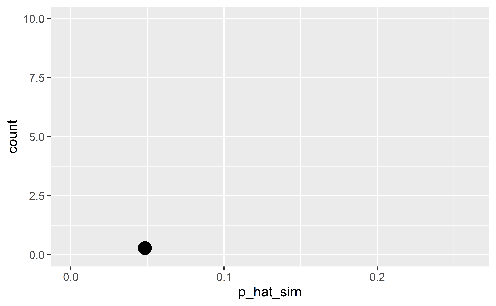
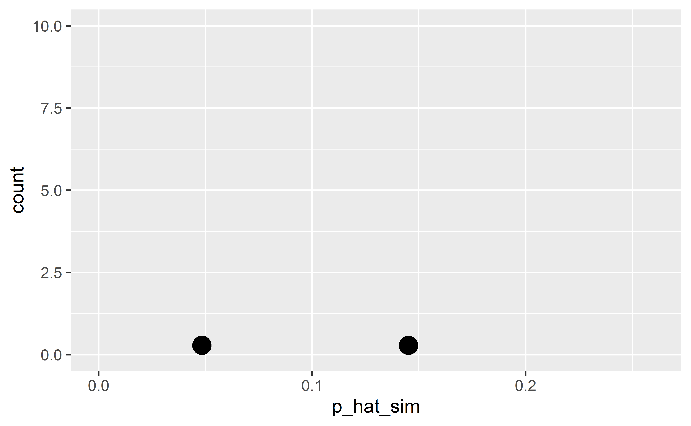
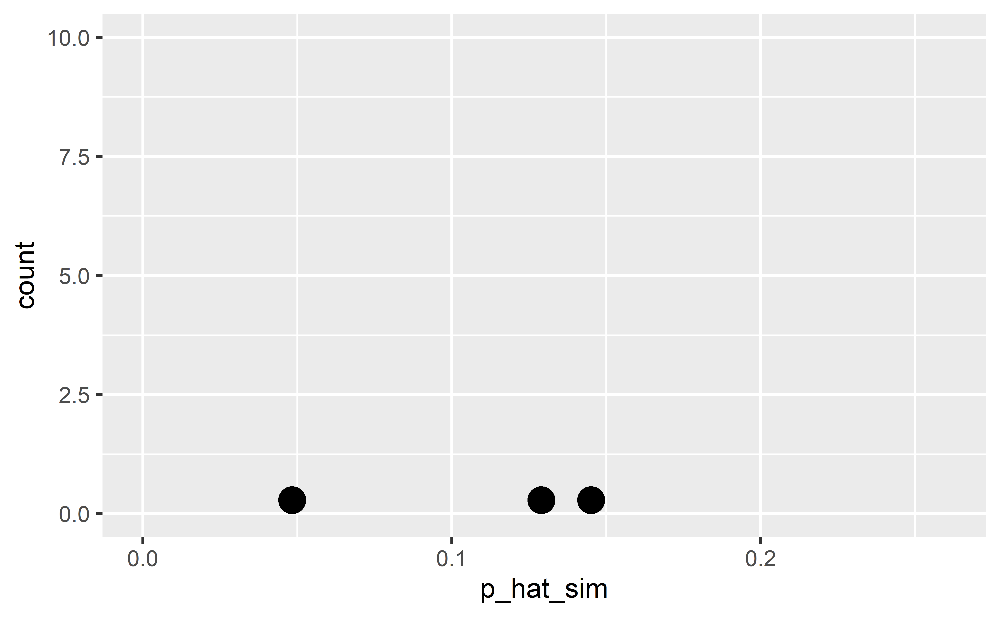
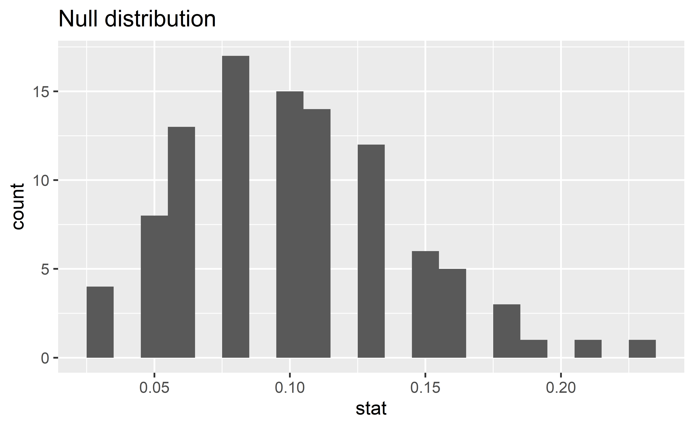
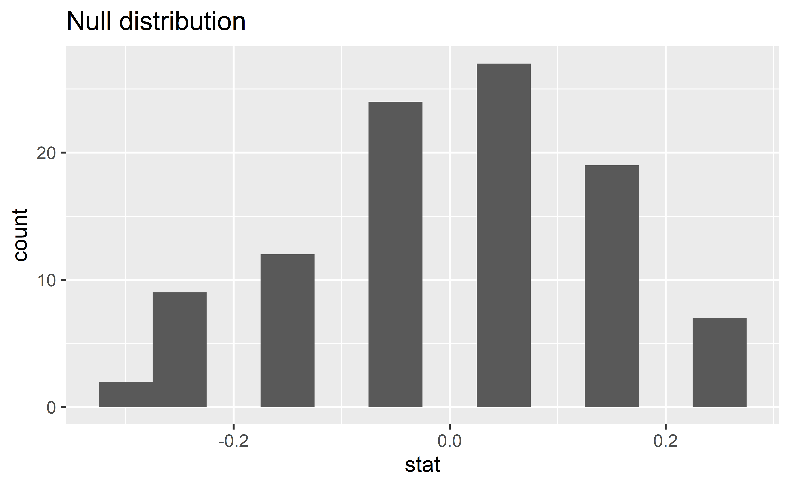

Hypothesis testing
Data Science in a Box
layout: true
class: middle
Hypothesis testing for a single proportion
Packages
library(tidyverse)
library(tidymodels)Organ donors
People providing an organ for donation sometimes seek the help of a special “medical consultant”. These consultants assist the patient in all aspects of the surgery, with the goal of reducing the possibility of complications during the medical procedure and recovery. Patients might choose a consultant based in part on the historical complication rate of the consultant’s clients.
One consultant tried to attract patients by noting that the average complication rate for liver donor surgeries in the US is about 10%, but her clients have only had 3 complications in the 62 liver donor surgeries she has facilitated. She claims this is strong evidence that her work meaningfully contributes to reducing complications (and therefore she should be hired!).
Data
organ_donor %>%
count(outcome)# A tibble: 2 x 2
outcome n
<chr> <int>
1 complication 3
2 no complication 59Parameter vs. statistic
A parameter for a hypothesis test is the “true” value of interest. We typically estimate the parameter using a sample statistic as a point estimate.
\(p~\): true rate of complication
\(\hat{p}~\): rate of complication in the sample = \(\frac{3}{62}\) = 0.048
Correlation vs. causation
.question[ Is it possible to assess the consultant’s claim using the data?]
–
No. The claim is that there is a causal connection, but the data are observational. For example, maybe patients who can afford a medical consultant can afford better medical care, which can also lead to a lower complication rate.
While it is not possible to assess the causal claim, it is still possible to test for an association using these data. For this question we ask, could the low complication rate of \(\hat{p}\) = 0.048 be due to chance?
Two claims
- Null hypothesis: “There is nothing going on”
Complication rate for this consultant is no different than the US average of 10%
–
- Alternative hypothesis: “There is something going on”
Complication rate for this consultant is lower than the US average of 10%
Hypothesis testing as a court trial
Null hypothesis, \(H_0\): Defendant is innocent
Alternative hypothesis, \(H_A\): Defendant is guilty
–
- Present the evidence: Collect data
–
- Judge the evidence: “Could these data plausibly have happened by chance if the null hypothesis were true?”
- Yes: Fail to reject \(H_0\)
- No: Reject \(H_0\)
Hypothesis testing framework
Start with a null hypothesis, \(H_0\), that represents the status quo
Set an alternative hypothesis, \(H_A\), that represents the research question, i.e. what we’re testing for
Conduct a hypothesis test under the assumption that the null hypothesis is true and calculate a p-value (probability of observed or more extreme outcome given that the null hypothesis is true)
- if the test results suggest that the data do not provide convincing evidence for the alternative hypothesis, stick with the null hypothesis
- if they do, then reject the null hypothesis in favor of the alternative
Setting the hypotheses
.question[ Which of the following is the correct set of hypotheses?]
\(H_0: p = 0.10\); \(H_A: p \ne 0.10\)
\(H_0: p = 0.10\); \(H_A: p > 0.10\)
\(H_0: p = 0.10\); \(H_A: p < 0.10\)
\(H_0: \hat{p} = 0.10\); \(H_A: \hat{p} \ne 0.10\)
\(H_0: \hat{p} = 0.10\); \(H_A: \hat{p} > 0.10\)
\(H_0: \hat{p} = 0.10\); \(H_A: \hat{p} < 0.10\)
Simulating the null distribution
Since \(H_0: p = 0.10\), we need to simulate a null distribution where the probability of success (complication) for each trial (patient) is 0.10.
.question[ Describe how you would simulate the null distribution for this study using a bag of chips. How many chips? What colors? What do the colors indicate? How many draws? With replacement or without replacement?]
What do we expect?
.question[ When sampling from the null distribution, what is the expected proportion of success (complications)?]
Simulation #1
sim1
complication no complication
3 59 [1] 0.0483871
Simulation #2
sim2
complication no complication
9 53 [1] 0.1451613
Simulation #3
sim3
complication no complication
8 54 [1] 0.1290323
This is getting boring…
We need a way to automate this process!
Using tidymodels to generate the null distribution
.small[]
Response: outcome (factor)
Null Hypothesis: point
# A tibble: 100 x 2
replicate stat
<dbl> <dbl>
1 1 0.161
2 2 0.081
3 3 0.161
4 4 0.145
5 5 0.097
6 6 0.145
# ... with 94 more rowsVisualizing the null distribution
.question[ What would you expect the center of the null distribution to be?]
–
ggplot(data = null_dist, mapping = aes(x = stat)) +
geom_histogram(binwidth = 0.01) +
labs(title = "Null distribution")
Calculating the p-value, visually
.question[ What is the p-value, i.e. in what % of the simulations was the simulated sample proportion at least as extreme as the observed sample proportion?]
Calculating the p-value, directly
null_dist %>%
filter(stat <= (3/62)) %>%
summarise(p_value = n()/nrow(null_dist))# A tibble: 1 x 1
p_value
<dbl>
1 0.12Significance level
We often use 5% as the cutoff for whether the p-value is low enough that the data are unlikely to have come from the null model. This cutoff value is called the significance level, \(\alpha\).
If p-value < \(\alpha\), reject \(H_0\) in favor of \(H_A\): The data provide convincing evidence for the alternative hypothesis.
If p-value > \(\alpha\), fail to reject \(H_0\) in favor of \(H_A\): The data do not provide convincing evidence for the alternative hypothesis.
Conclusion
.question[ What is the conclusion of the hypothesis test?]
–
Since the p-value is greater than the significance level, we fail to reject the null hypothesis. These data do not provide convincing evidence that this consultant incurs a lower complication rate than 10% (overall US complication rate).
Let’s get real
100 simulations is not sufficient
We usually simulate around 15,000 times to get an accurate distribution, but we’ll do 1,000 here for efficiency.
Run the test
.small[]
Visualize and calculate
.small[]
class: middle
One vs. two sided hypothesis tests
Types of alternative hypotheses
- One sided (one tailed) alternatives: The parameter is hypothesized to be less than or greater than the null value, < or >
–
- Two sided (two tailed) alternatives: The parameter is hypothesized to be not equal to the null value, \(\ne\)
- Calculated as two times the tail area beyond the observed sample statistic
- More objective, and hence more widely preferred
–
.question[ Average systolic blood pressure of people with Stage 1 Hypertension is 150 mm Hg. Suppose we want to use a hypothesis test to evaluate whether a new blood pressure medication has an effect on the average blood pressure of heart patients. What are the hypotheses?]
class: middle
Testing for independence
Is yawning contagious?
.question[ Do you think yawning is contagious?]
.pull-left[  ] .pull-right[
] .pull-right[  ]
]
Is yawning contagious?
An experiment conducted by the MythBusters tested if a person can be subconsciously influenced into yawning if another person near them yawns.
https://www.discovery.com/tv-shows/mythbusters/videos/is-yawning-contagious-2
Study description
In this study 50 people were randomly assigned to two groups: 34 to a group where a person near them yawned (treatment) and 16 to a control group where they didn’t see someone yawn (control).
The data are in the openintro package: yawn
yawn %>%
count(group, result)# A tibble: 4 x 3
group result n
<fct> <fct> <int>
1 ctrl not yawn 12
2 ctrl yawn 4
3 trmt not yawn 24
4 trmt yawn 10Proportion of yawners
.small[]
- Proportion of yawners in the treatment group: \(\frac{10}{34} = 0.2941\)
- Proportion of yawners in the control group: \(\frac{4}{16} = 0.25\)
- Difference: \(0.2941 - 0.25 = 0.0441\)
- Our results match the ones calculated on the MythBusters episode.
Independence?
.question[ Based on the proportions we calculated, do you think yawning is really contagious, i.e. are seeing someone yawn and yawning dependent?]
# A tibble: 4 x 4
# Groups: group [2]
group result n p_hat
<fct> <fct> <int> <dbl>
1 ctrl not yawn 12 0.75
2 ctrl yawn 4 0.25
3 trmt not yawn 24 0.706
4 trmt yawn 10 0.294Dependence, or another possible explanation?
The observed differences might suggest that yawning is contagious, i.e. seeing someone yawn and yawning are dependent.
But the differences are small enough that we might wonder if they might simple be due to chance.
Perhaps if we were to repeat the experiment, we would see slightly different results.
So we will do just that - well, somewhat - and see what happens.
Instead of actually conducting the experiment many times, we will simulate our results.
Two competing claims
“There is nothing going on.” Yawning and seeing someone yawn are independent, yawning is not contagious, observed difference in proportions is simply due to chance. \(\rightarrow\) Null hypothesis
“There is something going on.” Yawning and seeing someone yawn are dependent, yawning is contagious, observed difference in proportions is not due to chance. \(\rightarrow\) Alternative hypothesis
Simulation setup
A regular deck of cards is comprised of 52 cards: 4 aces, 4 of numbers 2-10, 4 jacks, 4 queens, and 4 kings.
Take out two aces from the deck of cards and set them aside.
The remaining 50 playing cards to represent each participant in the study:
- 14 face cards (including the 2 aces) represent the people who yawn.
- 36 non-face cards represent the people who don’t yawn.
Running the simulation
Shuffle the 50 cards at least 7 times1 to ensure that the cards counted out are from a random process.
Count out the top 16 cards and set them aside. These cards represent the people in the control group.
Out of the remaining 34 cards (treatment group) count the (the number of people who yawned in the treatment group).
Calculate the difference in proportions of yawners (treatment - control), and plot it on the board.
Mark the difference you find on the dot plot on the board.
.footnote[ [1] http://www.dartmouth.edu/~chance/course/topics/winning_number.html]
Simulation by hand
.question[ Do the simulation results suggest that yawning is contagious, i.e. does seeing someone yawn and yawning appear to be dependent?]

Simulation by computation
null_dist <- yawn %>%
specify(response = result, explanatory = group,
success = "yawn") %>%
hypothesize(null = "independence") %>%
generate(100, type = "permute") %>%
calculate(stat = "diff in props",
order = c("trmt", "ctrl"))Simulation by computation - 1
.small[ - Start with the data frame - Specify the variables - Since the response variable is categorical, specify the level which should be considered as “success”]
Simulation by computation - 2
.small[ - Start with the data frame - Specify the variables - Since the response variable is categorical, specify the level which should be considered as “success” - State the null hypothesis (yawning and whether or not you see someone yawn are independent)]
Simulation by computation - 3
.small[ - Start with the data frame - Specify the variables - Since the response variable is categorical, specify the level which should be considered as “success” - State the null hypothesis (yawning and whether or not you see someone yawn are independent) - Generate simulated differences via permutation]
Simulation by computation - 4
.small[ - Start with the data frame - Specify the variables - Since the response variable is categorical, specify the level which should be considered as “success” - State the null hypothesis (yawning and whether or not you see someone yawn are independent) - Generate simulated differences via permutation - Calculate the sample statistic of interest (difference in propotions) - Since the explanatory variable is categorical, specify the order in which the subtraction should occur for the calculation of the sample statistic, \((\hat{p}_{treatment} - \hat{p}_{control})\).]
Simulation by computation - 0
.small[ - Save the result - Start with the data frame - Specify the variables - Since the response variable is categorical, specify the level which should be considered as “success” - State the null hypothesis (yawning and whether or not you see someone yawn are independent) - Generate simulated differences via permutation - Calculate the sample statistic of interest (difference in propotions) - Since the explanatory variable is categorical, specify the order in which the subtraction should occur for the calculation of the sample statistic, \((\hat{p}_{treatment} - \hat{p}_{control})\).]
Visualizing the null distribution
.question[ What would you expect the center of the null distribution to be?]
–
ggplot(data = null_dist, mapping = aes(x = stat)) +
geom_histogram(binwidth = 0.05) +
labs(title = "Null distribution")
Calculating the p-value, visually
.question[ What is the p-value, i.e. in what % of the simulations was the simulated difference in sample proportion at least as extreme as the observed difference in sample proportions?]
Calculating the p-value, directly
null_dist %>%
filter(stat >= 0.0441) %>%
summarise(p_value = n()/nrow(null_dist))# A tibble: 1 x 1
p_value
<dbl>
1 0.53Conclusion
.question[ What is the conclusion of the hypothesis test?]
–
.question[ Do you “buy” this conclusion?]